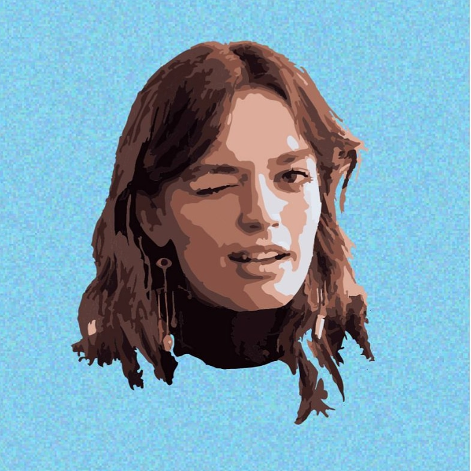
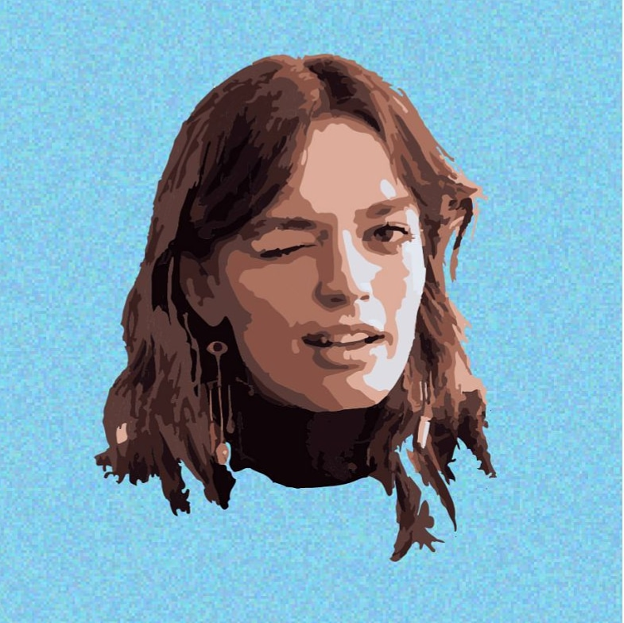

Nayan Kharkar
Btech in EE (2023), IIT Mandi
Nagpur,MH,India
Artist- Dig n Trad
Web Dev
Ui/Ux n Graphic Desginer
TvSeries/Anime enthusiast
Gamer
occasional Bookworm


Anime art
Kaneki, mob, deku, levi etc etc...
This is my favourite category to draw!
Fanarts
Artworks of some of my favourite
artists, entertainers etc.
 

Orignal Charecters
Here are some charecters I designed from
human reference or imagination.